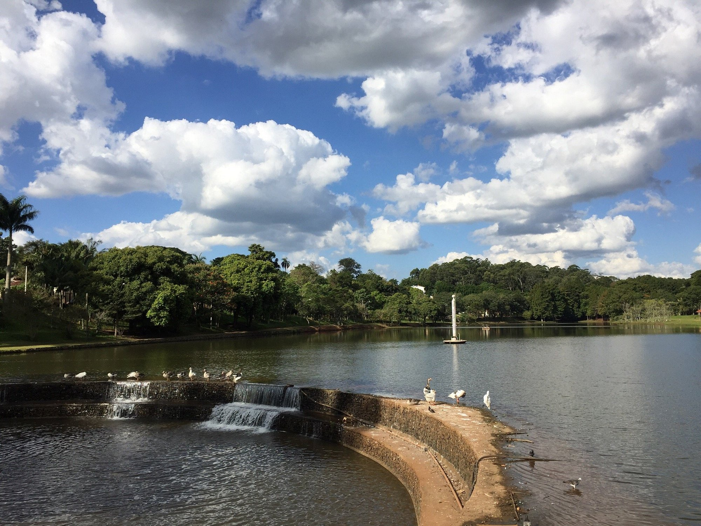
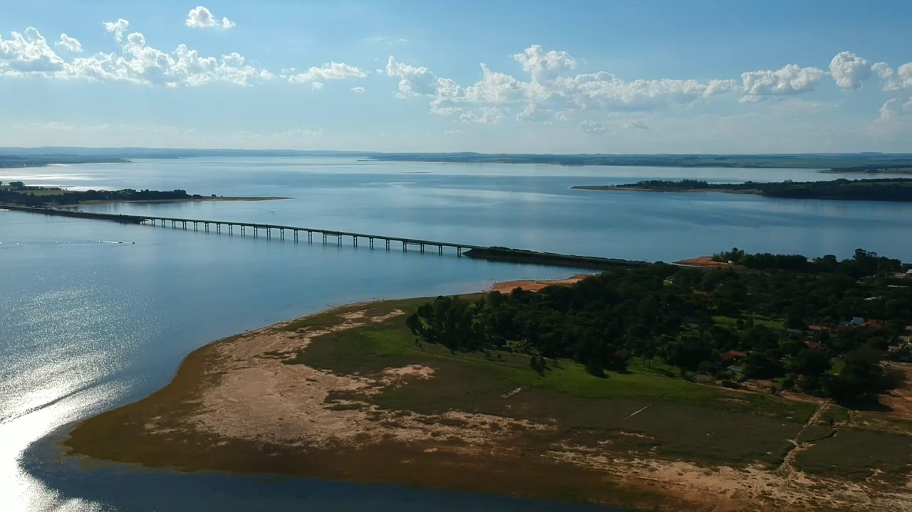
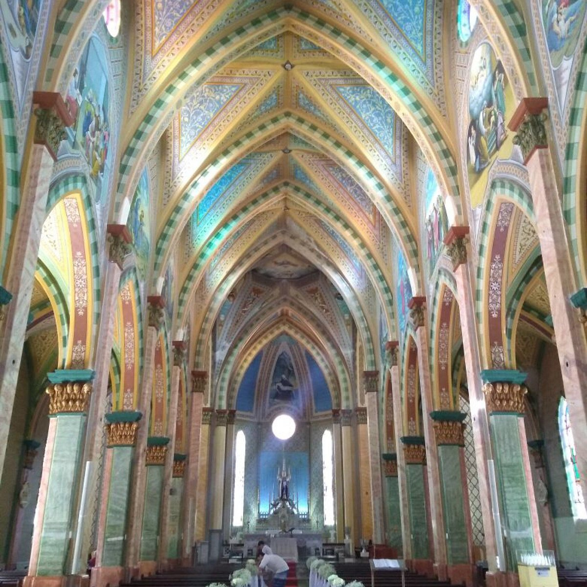
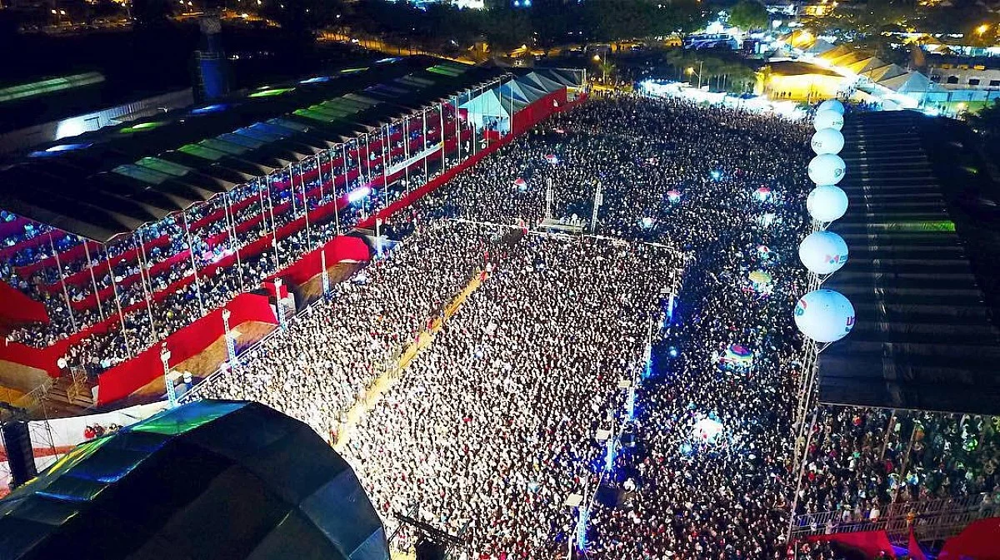
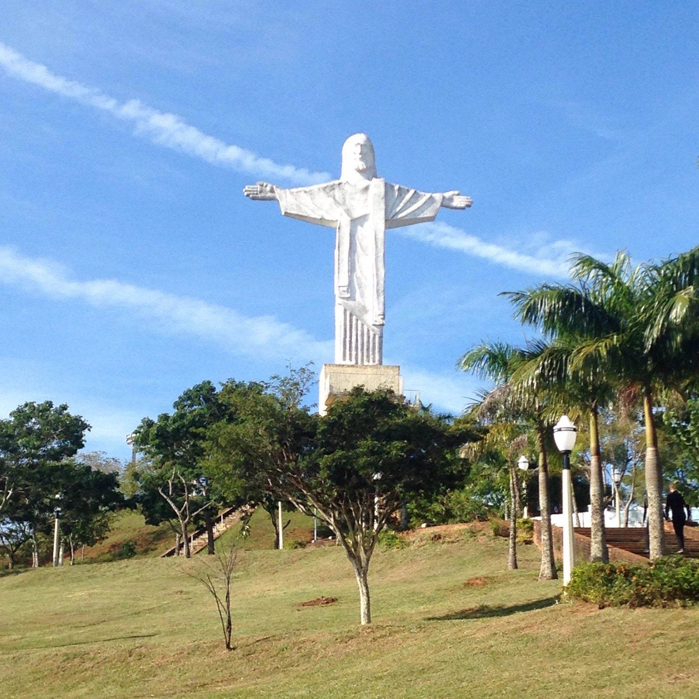
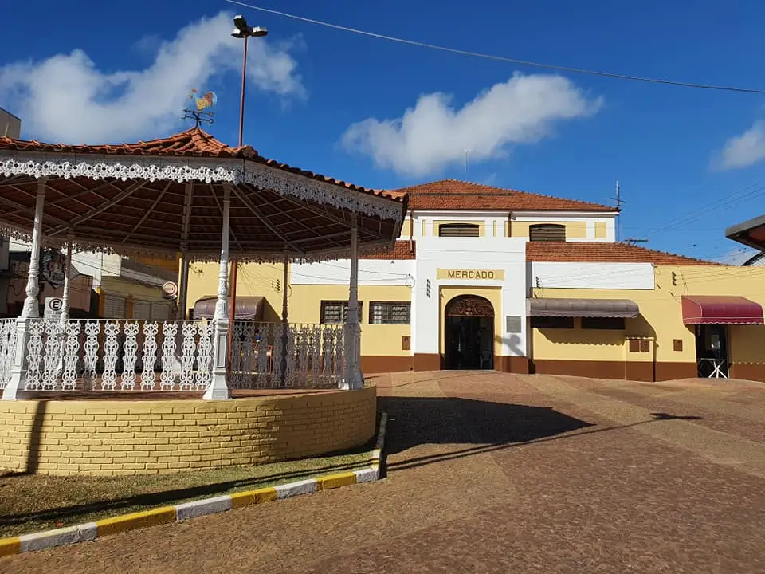

Avaré é uma estância turística do interior de São Paulo, conhecida por suas belezas naturais, represa de Jurumirim e tradições culturais. Fundada em meados do século XIX pelo major Vitoriano de Sousa Rocha e Domiciano Santana, Avaré surgiu em torno de uma capela dedicada a Nossa Senhora das Dores.

O Horto Florestal é o lugar ideal para ver o sol nascer, fazer uma caminhada ou corrida matinal e relaxar. Tem um belo lago e alguns animais livres circulando, como tucanos, gansos e capivaras. Ótimo para fazer trilhas e comer ao ar livre.
Referência de imagem: www.tripadvisor.com.br

Com certeza a Represa de Avaré é a atração turística mais procurada da região. Com 100 km de extensão, é a maior represa do estado de São Paulo. Você pode nadar e aproveitar as águas limpas da represa em meio a mata nativa e quiosques.
Referência de imagem: www.youtube.com/watch?v=dKSpXYUpGLU

Essa igreja é uma importante construção do século XIX e foi a partir dela que toda a cidade se desenvolveu ao redor. Ela foi construída como pagamento de uma promessa que o Major Vitoriano de Souza Rocha fez para Nossa Senhora das Dores.
Referência de imagem: www.tripadvisor.com.br

A Exposição Municipal Agropecuária de Avaré (EMAPA) é realizada anualmente no Parque de Exposições Dr. Fernando Cruz Pimentel, geralmente na primeira quinzena de dezembro. Criada em 1964, a EMAPA celebra o trabalho dos produtores rurais, promove o agronegócio local e movimenta a economia da região.
Referência de imagem: www.avare.sp.gov.br

O Mirante do Cristo Redentor em Avaré oferece uma vista panorâmica deslumbrante da cidade, tornando-se um local ideal para admirar a paisagem urbana e capturar fotografias inesquecíveis. Localizado na área urbana, com fácil acesso, proporcionando uma experiência conveniente e enriquecedora para moradores e visitantes
Referência de imagem: www.tripadvisor.com.br

O Mercado Municipal, carinhosamente conhecido como “mercadão”, está localizado na Praça da Independência e é uma emblemática construção que caracteriza o centro histórico de Avaré. Inaugurado em 1908, o mercado continua desempenhando um papel vital como entreposto comercial tanto no atacado quanto no varejo.
Referência de imagem: avaremais.com.br